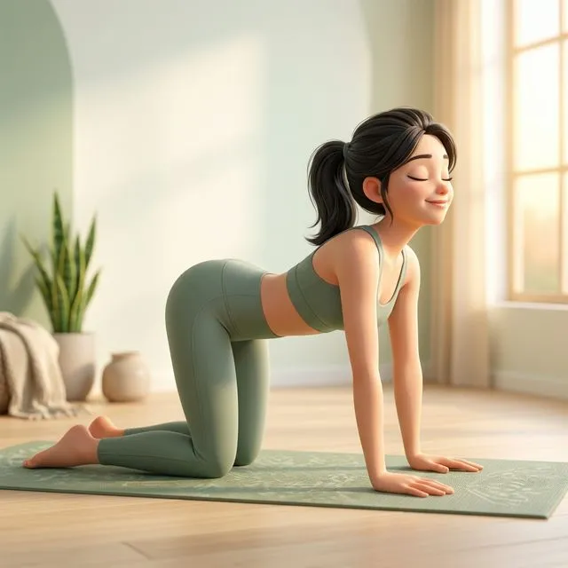
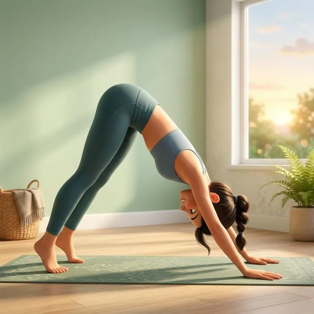
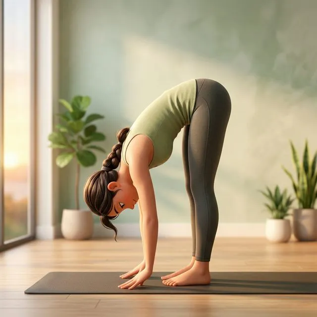
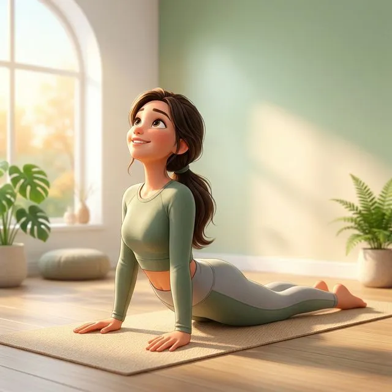
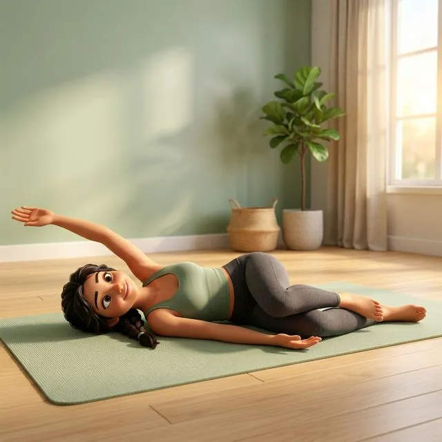
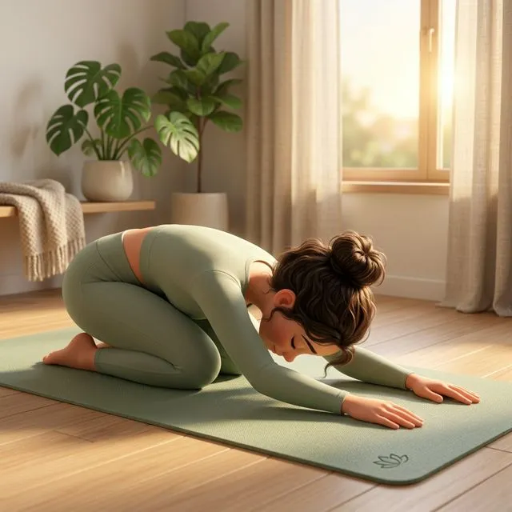

Buổi sáng là khoảnh khắc vàng để kết nối với cơ thể. Sau một đêm dài nằm bất động, các khớp cứng, cơ bắp co lại, và cột sống cần được "đánh thức" nhẹ nhàng. Chỉ cần 10–15 phút yoga đơn giản ngay trên giường hoặc trên thảm, bạn sẽ cảm nhận sự khác biệt rõ rệt suốt cả ngày.
Dưới đây là 6 tư thế tốt nhất để bắt đầu ngày mới — nhẹ nhàng, an toàn, phù hợp mọi trình độ.
Tại sao nên tập yoga ngay sau khi thức dậy? 🌄
Không cần dậy sớm thêm 1 tiếng — chỉ cần 10 phút là đủ! Bạn có thể tập ngay trên giường với 2-3 tư thế đầu tiên, rồi di chuyển xuống thảm khi cơ thể đã ấm.
6 tư thế Yoga buổi sáng 🧘♀️

Tư thế Mèo – Bò
Marjaryasana – Bitilakasana
Động tác "đánh thức cột sống" hoàn hảo nhất. Sự phối hợp giữa cong lưng và trũng lưng giúp bôi trơn toàn bộ đĩa đệm, xua tan sự cứng nhắc sau một đêm dài.
📋 Cách thực hiện
- Bắt đầu ở tư thế bốn điểm — hai tay dưới vai, hai đầu gối dưới hông
- Hít vào (Cow): Trũng lưng, ngẩng đầu, mở ngực hướng lên trần
- Thở ra (Cat): Cong lưng lên như mèo, cúi đầu, kéo rốn vào trong
- Di chuyển chậm rãi, đồng bộ từng nhịp thở

Chó cúi mặt
Adho Mukha Svanasana
Được mệnh danh là "tư thế yoga toàn thân". Kéo giãn mặt sau chân, mở vai, kéo dài cột sống — tất cả trong một động tác. Đặc biệt tuyệt vời để đưa máu lên não, giúp bạn tỉnh táo ngay lập tức.
📋 Cách thực hiện
- Từ tư thế bốn điểm, nhấc hông lên cao, tạo hình chữ V ngược
- Đẩy gót chân hướng xuống sàn (không cần chạm)
- Hai tay bám chắc, xoay vai ra ngoài, đẩy ngực về phía đùi
- "Đạp chân" luân phiên — uốn cong gối phải rồi trái — để khởi động bắp chân

Gập người đứng
Uttanasana
Tư thế "thả" hoàn toàn — trọng lực tự kéo giãn cột sống và mặt sau chân. Đầu buông thõng giúp máu dồn lên não, giảm mệt mỏi và "xoá" cảm giác buồn ngủ từ sáng sớm.
📋 Cách thực hiện
- Đứng thẳng, hai chân rộng bằng hông
- Gập người từ hông (không phải từ eo), để đầu và tay buông tự nhiên
- Có thể hơi co gối nếu hamstring còn cứng buổi sáng
- Rung lắc đầu nhẹ kiểu "gật đầu — lắc đầu" để thả cổ

Rắn hổ mang nhẹ
Bhujangasana
Sau một đêm "gập người" khi ngủ, cột sống cần được uốn ngược lại. Cobra mở ngực, kích hoạt cơ lưng, và giúp hít thở sâu hơn — nạp oxy cho cả ngày hoạt động.
📋 Cách thực hiện
- Nằm sấp, hai tay đặt dưới vai, khuỷu tay ép sát thân
- Hít vào — nhấc ngực lên nhẹ nhàng, giữ xương mu ép sàn
- Không ưỡn cổ quá mức — nhìn thẳng hoặc hơi ngửa
- Ép vai xuống, xa tai — mở lồng ngực tối đa

Vặn xoắn nằm ngửa
Supta Matsyendrasana
Tư thế "massage nội tạng" tuyệt vời — vặn nhẹ giúp kích thích hệ tiêu hoá, giải phóng lưng dưới, và tạo cảm giác "xả" toàn bộ căng thẳng tích tụ qua đêm. Có thể tập ngay trên giường!
📋 Cách thực hiện
- Nằm ngửa, kéo đầu gối phải về ngực
- Dùng tay trái đưa gối phải sang bên trái, để vai phải vẫn chạm sàn
- Tay phải dang ngang, mắt nhìn theo tay phải
- Thở sâu, để trọng lực làm phần còn lại. Đổi bên.

Tư thế Em bé
Balasana
Kết thúc bằng sự thư giãn. Balasana giúp kéo giãn lưng dưới, thả lỏng vai, và mang lại cảm giác an toàn, ấm áp — như một lời "cảm ơn cơ thể" trước khi bước vào ngày mới.
📋 Cách thực hiện
- Quỳ xuống, hai gối mở rộng bằng vai hoặc hẹp hơn
- Ngồi mông về gót chân, gập người về phía trước
- Trán chạm sàn, hai tay duỗi thẳng phía trước hoặc buông dọc thân
- Thở chậm và sâu — cảm nhận lưng phồng lên theo nhịp thở
Trình tự tập gợi ý ⏰
Dưới đây là flow 12 phút mà bạn có thể thực hiện mỗi sáng:
Nằm ngửa, nhắm mắt, hít thở sâu 5 lần. Kéo hai tay lên trên đầu, duỗi toàn thân như đang ngáp. Cảm nhận cơ thể dần tỉnh dậy.
Di chuyển xuống thảm (hoặc trên giường cũng được). 8-10 lần Cat-Cow chậm rãi, "bôi trơn" cột sống.
Từ bốn điểm, nhấc hông lên thành Downward Dog. "Đạp chân" từng bên để khởi động. Giữ 5-8 hơi thở.
Bước chân lên đầu thảm, gập người xuống. Để đầu buông, lắc nhẹ. Từ từ cuộn lên đứng thẳng.
Nằm sấp xuống, thực hiện 3 lần Cobra nhẹ nhàng, mỗi lần giữ 5 hơi thở. Mở ngực, nạp năng lượng.
Nằm ngửa, vặn xoắn sang trái rồi phải, mỗi bên 8 hơi thở. "Massage" nội tạng và giải phóng lưng dưới.
Kết thúc trong Balasana. Thở chậm, biết ơn cơ thể. Khi sẵn sàng — từ từ ngồi lên, mỉm cười, và bắt đầu ngày mới!
- Buổi sáng cơ thể chưa hoàn toàn nóng — luôn tập nhẹ nhàng, không ép quá sâu
- Nếu bị đau lưng hoặc thoát vị đĩa đệm, bỏ qua Cobra và thay bằng thêm thời gian ở Child's Pose
- Uống 1 ly nước ấm trước khi tập để hydrate cơ thể
- Không tập trên giường quá mềm — mặt phẳng cứng vừa sẽ hỗ trợ tốt hơn
Biến yoga sáng thành thói quen 🌿
Nghiên cứu cho thấy cần 21 ngày liên tục để hình thành thói quen. Hãy thử cam kết:
- 📌 Tuần 1–2: Chọn 3 tư thế yêu thích, tập 5 phút mỗi sáng
- 📌 Tuần 3: Tập đủ 6 tư thế, kéo dài lên 10–12 phút
- 📌 Sau 21 ngày: Cơ thể sẽ tự "đòi" tập — bạn sẽ thấy thiếu nếu bỏ!
Tải ảnh bài viết này về điện thoại, đặt làm hình nền nhắc nhở. Mỗi sáng check-in bằng cách ghi lại cảm nhận. Sau 21 ngày, bạn sẽ ngạc nhiên với sự thay đổi!